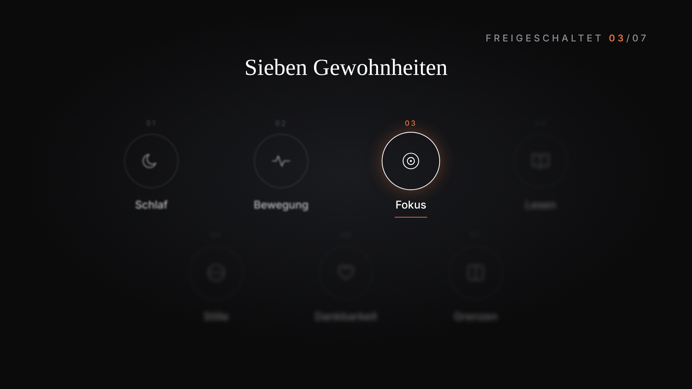
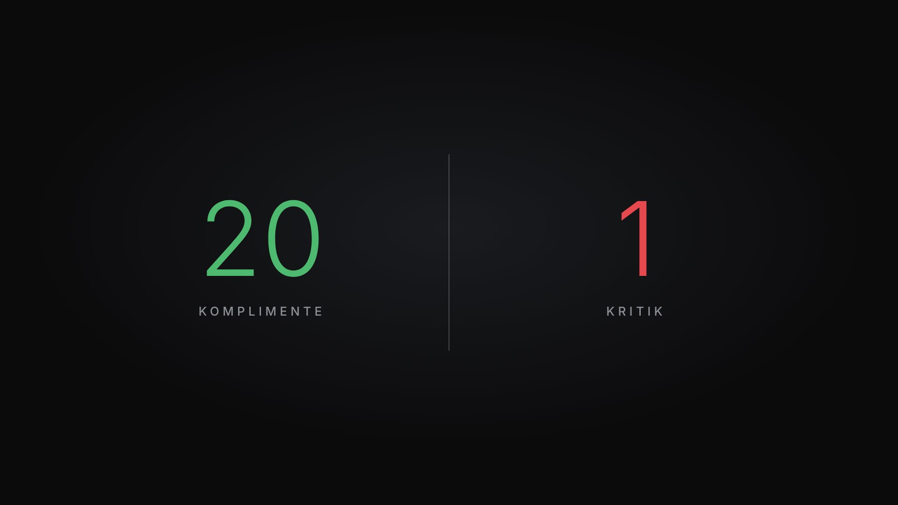
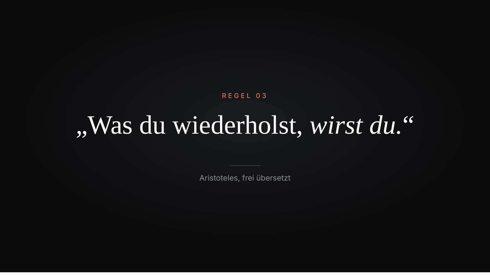

| Hook | |
1Du setzt dich hin, um eine Stunde konzentriert zu arbeiten. | B-Roll Du setzt dich an den Schreibtisch und klappst den Laptop auf. |
2Nach zehn Minuten liegt das Handy in deiner Hand. | Du im Bild Du im Bild, das Handy schon in der Hand, Blick kurz darauf. |
3Du weißt nicht mal mehr, warum du es genommen hast. 4Und als du es weglegst, ist der Gedanke weg, an dem du gerade dran warst. | B-Roll Handy wird weggelegt, Blick zurück auf den Bildschirm, nur der Cursor blinkt. |
5Kennst du das? 6Das liegt nicht an fehlender Disziplin. | Du im Bild Du direkt in die Kamera, Zoom 10 % auf „Disziplin“. |
7Dein Gehirn wurde über Jahre umtrainiert, und zwar von einem Gerät, das genau dafür gebaut ist. | Text Text: „Umtrainiert.“ in Serif, kursiv, mittig. |
8In diesem Video zeige ich dir vier Gründe, warum dein Handy deinen Fokus zerstört. | Vollbild-Grafik Übersicht mit fünf Kreisen: Stille, Unterbrechung, Reize, Langeweile, Lösung. Alle unscharf, Zähler „Freigeschaltet 00/05“. Die ersten vier leuchten nacheinander kurz auf.  |
9Danach bekommst du fünf Schritte, mit denen du ihn dir zurückholst. | Du im Bild Du im Bild, Zoom 10 % auf „zurückholst“. |
| 1. Dein Handy stört dich auch, wenn es still ist | |
10Die meisten glauben, das Problem sind die Benachrichtigungen. | Vollbild-Grafik Übersicht, Kreis 01 „Stille“ wird aktiv, Zähler springt auf 01/05. |
11Schalte sie aus, und alles ist gut. 12Ganz so einfach ist es leider nicht. | Du im Bild Du im Bild, kurzes Kopfschütteln bei „nicht“. |
13Forscher der Universität Texas haben 2017 Experimente mit fast 800 Teilnehmern gemacht. 14Alle sollten Aufgaben lösen, die Konzentration und Arbeitsgedächtnis brauchen. | Bildschirmaufnahme Browserfenster mit der Studie Ward et al. 2017, langsam scrollend, Titel und Teilnehmerzahl markiert. |
15Der einzige Unterschied war, wo ihr Handy lag. 16Bei einer Gruppe lag es auf dem Tisch, mit dem Display nach unten. 17Bei der zweiten Gruppe steckte es in der Tasche. 18Die dritte Gruppe hatte es im Nebenraum gelassen. 19Alle Handys waren stumm geschaltet. 20Die Gruppe mit dem Handy im Nebenraum schnitt am besten ab. 21Die Gruppe mit dem Handy auf dem Tisch schnitt am schlechtesten ab. | Vollbild-Grafik Drei Spalten mit Symbolen: Tisch, Tasche, Nebenraum. Jedes Symbol erscheint auf seinem Wort. Auf „stumm“ ein durchgestrichener Lautsprecher über allen. Auf „besten“ leuchtet Nebenraum grün, auf „schlechtesten“ Tisch rot. |
22Die Forscher nennen diesen Effekt Brain Drain. | Text Text: „Brain Drain“ in Serif. |
23Ein Teil deines Gehirns ist damit beschäftigt, das Handy nicht zu nehmen. 24Diese Kraft fehlt dir dann für das, was du gerade machst. | Du mit Grafik Neben dir ein Ring für deine Denkkraft. Auf „Teil“ wird ein oranges Segment abgezogen. |
25Stell dir vor, du lernst für eine Prüfung oder schreibst an einem wichtigen Text. 26Das Handy liegt neben dir, ganz ruhig. | B-Roll Lernen am Schreibtisch, das Handy liegt ruhig daneben, die Schärfe wandert langsam aufs Handy. |
27Du denkst, es stört dich nicht. 28Es stört dich trotzdem, du merkst es nur nicht. | Du im Bild Du in die Kamera, Zoom auf „trotzdem“. |
29Am stärksten war der Effekt übrigens bei den Teilnehmern, die sich selbst als besonders abhängig von ihrem Handy eingeschätzt hatten. 30Je mehr du am Handy hängst, desto mehr kostet es dich, wenn es nur neben dir liegt. | Vollbild-Grafik Achse „Abhängigkeit vom Handy“ von niedrig nach hoch, der Balken „Leistungsverlust“ wächst mit. |
31Denk an einen normalen Arbeitstag. 32Das Handy liegt rechts neben der Tastatur, weil du ja erreichbar sein willst. 33Du schaust nicht mal drauf. | B-Roll Arbeitstag: Handy rechts neben der Tastatur, Hände tippen, der Blick bleibt auf dem Bildschirm. |
34Trotzdem fühlst du dich nach zwei Stunden, als hättest du mit halber Kraft gearbeitet. 35Genau das ist der Grund. | Du im Bild Du im Bild, müdes Ausatmen. |
36Dein Gehirn hat die ganze Zeit eine zweite Aufgabe erledigt, von der du nichts wusstest. | Du mit Grafik Neben dir zwei Balken: „Deine Aufgabe“ und auf „zweite“ dazu „Handy nicht nehmen“. |
| 2. Jede Unterbrechung kostet dich mehr, als du denkst | |
37Ein kurzer Blick aufs Handy dauert zehn Sekunden. | Vollbild-Grafik Übersicht, Kreis 02 „Unterbrechung“ wird aktiv, Zähler 02/05. |
38So fühlt es sich zumindest an. 39Die echten Kosten kommen danach. | Du im Bild Du im Bild, leichtes Lächeln bei „zumindest“. |
40Die Informatikerin Gloria Mark erforscht seit über zwanzig Jahren, wie Menschen am Bildschirm arbeiten. 41Sie hat herausgefunden, dass es nach einer Unterbrechung im Schnitt gut 23 Minuten dauert, bis Menschen wieder bei ihrer ursprünglichen Aufgabe sind. | Vollbild-Grafik Zahlengrafik: Zähler läuft von 0:10 auf 23 Minuten, Label „Rückkehr zur Aufgabe“, darunter klein „Gloria Mark“.  |
42Dazu kommt etwas, das die Psychologin Sophie Leroy Aufmerksamkeitsrest nennt. 43Wenn du von einer Aufgabe zur nächsten springst, bleibt ein Teil deiner Gedanken bei der alten hängen. | Text Text: „Aufmerksamkeitsrest“ in Serif, darunter klein „Sophie Leroy, 2009“. |
44Du liest eine Nachricht, legst das Handy weg und arbeitest weiter. | B-Roll Nachricht lesen, Handy weglegen, weiterarbeiten. |
45Ein Teil von dir denkt trotzdem noch an die Nachricht. 46An die Antwort, die du schreiben musst. 47An das Foto, das du gerade gesehen hast. | Du mit Grafik Neben dir erscheinen untereinander und leicht unscharf: „Die Antwort“ und „Das Foto“. |
48Sogar das bloße Summen reicht schon. | B-Roll Handy vibriert auf dem Tisch, das Display leuchtet, niemand schaut hin. |
49In einer Studie der Florida State University wurden Teilnehmer bei einer Konzentrationsaufgabe deutlich schlechter, sobald eine Benachrichtigung kam. 50Sie mussten nicht mal draufschauen. | Bildschirmaufnahme Browserfenster mit der Studie Stothart et al. 2015, Kernsatz markiert. |
51Rechne das mal für deinen Tag durch. 52Wenn du alle zehn Minuten aufs Handy schaust, kommst du nie in den Zustand, in dem gute Arbeit entsteht. | Vollbild-Grafik Zeitstrahl eines Arbeitstags von 9 bis 17 Uhr. Alle zehn Minuten ein roter Strich, keine Lücke bleibt lang genug für 23 Minuten Fokus. |
53Du bleibst den ganzen Tag an der Oberfläche. 54Abends wunderst du dich, warum du so müde bist, obwohl du kaum etwas geschafft hast. | Du im Bild Du im Bild, Zoom auf „müde“. |
55Ein Beispiel. 56Du willst eine Präsentation fertig machen. 57Nach einer Viertelstunde kommt eine Nachricht aus der Familiengruppe. 58Du antwortest kurz, schaust dabei noch schnell in die Mails und siehst ein Video, das dir jemand geschickt hat. | B-Roll Präsentation am Laptop, eine Nachricht aus der Familiengruppe poppt aufs Handy, antworten, Mails, Video. |
59Nach fünf Minuten bist du zurück an der Präsentation. 60Du liest die letzte Folie dreimal, bis du wieder weißt, was du sagen wolltest. | Bildschirmaufnahme Bildschirmaufnahme: dieselbe Folie, der Cursor springt hin und her. |
61Diese Minuten tauchen in keiner Bildschirmzeit auf. 62Sie fehlen dir trotzdem, jeden Tag aufs Neue. | Du im Bild Du im Bild, ernster Blick. |
| 3. Dein Gehirn gewöhnt sich an schnelle Reize | |
63Jedes Mal, wenn du dein Handy entsperrst, weißt du nicht genau, was dich erwartet. | Vollbild-Grafik Übersicht, Kreis 03 „Reize“ wird aktiv, Zähler 03/05. |
64Vielleicht eine Nachricht von einem Freund. 65Vielleicht ein Like. 66Vielleicht gar nichts. | Bildschirmaufnahme Handy-Bildschirmaufnahme in drei schnellen Schnitten: Nachricht, Like, leerer Sperrbildschirm. |
67Genau diese Ungewissheit macht es so stark. 68Psychologen nennen das variable Belohnung. | Text Text: „Variable Belohnung“ in Serif. |
69Es ist dasselbe Prinzip wie beim Spielautomaten. 70Wenn eine Belohnung unvorhersehbar kommt, greifst du öfter zu, als wenn sie jedes Mal sicher wäre. | Vollbild-Grafik Drei Walzen drehen sich mit den Symbolen Nachricht, Herz und leer und bleiben auf leer stehen. |
71Dein Gehirn schüttet Dopamin schon in der Erwartung aus, nicht erst bei der Belohnung selbst. 72Das Problem ist, was das mit deiner Aufmerksamkeit macht. | Du mit Grafik Neben dir eine Kurve „Dopamin“, die schon vor dem Symbol „Belohnung“ ansteigt. |
73Gloria Mark hat auch gemessen, wie lange Menschen am Bildschirm bei einer Sache bleiben. 74Im Jahr 2004 waren es im Schnitt etwa zweieinhalb Minuten. 75In ihren neueren Messungen sind es nur noch 47 Sekunden. | Vollbild-Grafik Zahlengrafik wie Testszene 03: „2:30“ mit Label 2004 schrumpft zu „0:47“ mit Label heute, klein „Gloria Mark“. |
76Wenn du jeden Tag unzählige kurze Reize bekommst, wird alles Langsame anstrengend. | Du im Bild Du im Bild. |
77Ein Buch. 78Ein langes Gespräch. 79Eine Aufgabe, bei der du erst nach einer halben Stunde ein Ergebnis siehst. | B-Roll Drei kurze Bilder: aufgeschlagenes Buch, zwei Menschen im Gespräch, leeres Dokument mit blinkendem Cursor. |
80Das fühlt sich dann zäh an. 81Das liegt nicht an der Aufgabe, sondern daran, worauf dein Gehirn eingestellt ist. | Du im Bild Du im Bild, Zoom auf „eingestellt“. |
82Vielleicht merkst du das selbst beim Serienschauen. 83Du hast nebenbei das Handy in der Hand, weil die Serie allein nicht mehr reicht. | B-Roll Eine Serie läuft auf dem Fernseher, davor scrollt eine Hand auf dem Handy. |
84Das ist kein Charakterfehler. 85Das ist Training, nur eben in die falsche Richtung. | Text Text in zwei Zeilen: „Kein Charakterfehler.“ und auf „Training“ darunter „Training.“ |
86Schau dir an, wie Apps gebaut sind. 87Der Feed hört nie auf. 88Nach dem einen Video startet automatisch das nächste. 89Zum Aktualisieren ziehst du nach unten, wie an einem Hebel. | Bildschirmaufnahme Handy-Bildschirmaufnahme: endloser Feed, Autoplay startet das nächste Video, Ziehen zum Aktualisieren. |
90Nichts davon ist Zufall. 91Teams aus Designern und Psychologen arbeiten daran, dass du möglichst lange bleibst. | Du im Bild Du im Bild. |
92Du sitzt also einer ganzen Branche gegenüber, die von deiner Aufmerksamkeit lebt. 93Dass du dabei manchmal verlierst, sagt nichts über deinen Willen aus. | Du mit Grafik Neben dir viele graue Punkte gegenüber einem einzelnen Punkt in Akzentfarbe. |
| 4. Du hast verlernt, Langeweile auszuhalten | |
94Denk mal an das letzte Mal, als du an einer Kasse gewartet hast. | Vollbild-Grafik Übersicht, Kreis 04 „Langeweile“ wird aktiv, Zähler 04/05. |
95Oder an der Ampel. 96Wie lange hat es gedauert, bis das Handy draußen war? | B-Roll Warten an der Ampel, die Hand geht sofort zum Handy. |
97Für die meisten von uns ist Langeweile heute nach wenigen Sekunden vorbei. 98Genau da liegt ein Problem, das kaum jemand sieht. | Du im Bild Du im Bild. |
99In Momenten ohne Input arbeitet dein Gehirn weiter. 100Es sortiert Erlebnisse, verknüpft Ideen und macht Pläne. | Vollbild-Grafik Netz aus Punkten. Auf „sortiert“, „verknüpft“ und „Pläne“ erscheint je ein Wort, Linien verbinden sie. |
101Viele gute Einfälle kommen unter der Dusche oder beim Spazierengehen. | B-Roll Spaziergang ohne Kopfhörer, Blick in die Ferne. |
102Das ist kein Zufall. 103Es sind die Momente, in denen du nichts konsumierst. 104Wenn du jede Lücke mit dem Handy füllst, nimmst du deinem Kopf diese Pausen weg. | Du im Bild Du im Bild, Zoom auf „Lücke“. |
105Dazu kommt ein zweiter Effekt. 106Jede tiefe Arbeit hat Phasen, in denen es zäh wird. 107Wer gelernt hat, bei jeder Langeweile zum Handy zu greifen, bricht genau an diesen Stellen ab. | Vollbild-Grafik Linie einer Arbeitsphase sackt in ein Tal „zäh“. Dort springt ein Handysymbol hinein und die Linie bricht rot ab. |
108Fokus ist zu einem großen Teil die Fähigkeit, bei einer Sache zu bleiben, obwohl sie gerade keinen Spaß macht. | Text Zitat im Stil der Testszene 01: „Fokus ist die Fähigkeit, bei einer Sache zu bleiben, obwohl sie gerade keinen Spaß macht.“  |
109Diese Fähigkeit trainierst du jedes Mal ab, wenn du einer langweiligen Minute ausweichst. | Du im Bild Du im Bild. |
110Stell dir vor, du liest ein Sachbuch. 111Nach drei Seiten kommt ein Kapitel, das dich weniger interessiert. 112Früher hättest du einfach weitergelesen. 113Heute greifst du zum Handy, und das Buch liegt danach eine Woche auf dem Nachttisch. | B-Roll Sachbuch lesen, nach ein paar Seiten Griff zum Handy, das Buch liegt danach auf dem Nachttisch. |
114Das passiert nicht, weil das Buch schlecht ist. 115Es passiert, weil dein Gehirn gelernt hat, dass es für jede zähe Minute einen schnellen Ausweg gibt. | Du im Bild Du im Bild. |
116Die gute Nachricht ist, dass du diese Fähigkeit genauso wieder aufbauen kannst. 117Langeweile auszuhalten funktioniert wie ein Muskel, der mit jeder Wiederholung stärker wird. | Du mit Grafik Neben dir wächst ein Balken „Langeweile aushalten“ in fünf Stufen. |
| 5. So holst du dir deinen Fokus zurück | |
118Du musst dein Handy nicht wegwerfen. | Vollbild-Grafik Übersicht, Kreis 05 „Lösung“ wird aktiv, Zähler 05/05. |
119Du musst nur aufhören, es überall dabeizuhaben, wo du dich konzentrieren willst. | Du im Bild Du im Bild. |
120Hier sind fünf Schritte, die du heute noch umsetzen kannst. 121Erstens: Leg dein Handy beim Arbeiten in einen anderen Raum. | Vollbild-Grafik Liste der fünf Schritte, alle unscharf. Auf „Erstens“ wird 01 „Anderer Raum“ scharf, Zähler 01/05. |
122Nicht umgedreht auf den Tisch und nicht in die Tasche. | B-Roll Handy wird in einen anderen Raum gelegt, die Tür geht zu. |
123Du erinnerst dich an die Studie vom Anfang. 124Genau das hat den Unterschied gemacht. | Du mit Grafik Neben dir die drei Gruppen aus Grund 1 in klein, Nebenraum leuchtet grün. |
125Zweitens: Schalte alle Benachrichtigungen aus, die nicht von echten Menschen kommen. | Vollbild-Grafik Schritte, 02 „Benachrichtigungen“ wird scharf. |
126Apps, Newsletter und Spiele dürfen dich nicht mehr unterbrechen. 127Nachrichten von Familie und engen Freunden dürfen bleiben. 128Geh dafür heute Abend einmal durch deine Einstellungen. | Bildschirmaufnahme Handy-Bildschirmaufnahme: Einstellungen, Mitteilungen für einzelne Apps ausschalten. |
129Das dauert zehn Minuten und spart dir jeden Tag dutzende Unterbrechungen. | Du im Bild Du im Bild. |
130Drittens: Stell dein Display auf Graustufen. | Vollbild-Grafik Schritte, 03 „Graustufen“ wird scharf. |
131Bunte Symbole sind darauf ausgelegt, deinen Blick zu ziehen. 132In Grau wirkt dasselbe Handy plötzlich langweilig. | Bildschirmaufnahme Handy-Bildschirmaufnahme: farbiger Startbildschirm wechselt auf „Grau“ in Graustufen. |
133Viertens: Plane feste Handyzeiten ein. | Vollbild-Grafik Schritte, 04 „Handyzeiten“ wird scharf. |
134Zum Beispiel dreimal am Tag für fünfzehn Minuten. 135In diesen Zeiten darfst du alles checken. 136Dazwischen bleibt das Handy weg. | Du mit Grafik Neben dir eine Tagesleiste von 7 bis 22 Uhr. Auf „dreimal“ erscheinen drei kleine Blöcke in Akzentfarbe. |
137Der Trick dabei ist, dass du nichts verpasst. 138Du verschiebst das Checken nur auf einen Zeitpunkt, den du selbst bestimmst. 139Sag den wichtigsten Menschen in deinem Leben Bescheid, dass sie dich im Notfall anrufen können. | Du im Bild Du im Bild. |
140Fünftens: Übe Langeweile. | Vollbild-Grafik Schritte, 05 „Langeweile üben“ wird scharf. |
141Warte an der Kasse, ohne aufs Handy zu schauen. 142Geh zehn Minuten spazieren, ohne Kopfhörer. | B-Roll Warten an der Kasse ohne Handy, danach Spaziergang ohne Kopfhörer. |
143Am Anfang fühlt sich das komisch an. 144Mit der Zeit wird dein Kopf ruhiger, und es fällt dir leichter, bei einer Sache zu bleiben. | Du im Bild Du im Bild. |
145Fang nicht mit allen fünf Schritten gleichzeitig an. 146Nimm den ersten und zieh ihn eine Woche lang durch. 147Das bringt dir mehr als jede Fokus-App. | Vollbild-Grafik Alle fünf Schritte sichtbar, nur 01 bleibt scharf, der Rest unscharf. |
148Wenn das sitzt, kommt der nächste Schritt dazu. 149So baust du dir in gut einem Monat eine Umgebung, in der Fokus wieder normal ist und nicht die Ausnahme. | Du im Bild Du im Bild. |
| Outro | |
150Dein Fokus ist nicht kaputt. 151Er ist gerade auf etwas anderes trainiert. | Text Text: „Dein Fokus ist nicht kaputt.“ in Serif, „nicht kaputt“ kursiv. |
152Das Handy stört dich, auch wenn es still ist. 153Jede Unterbrechung kostet dich mehr Zeit, als sie dauert. 154Und je öfter du schnellen Reizen nachgibst, desto schwerer fällt dir alles, was Geduld braucht. 155Und wer jeder Langeweile ausweicht, verliert genau die Fähigkeit, auf die es beim Fokus ankommt. | Vollbild-Grafik Übersicht der vier Gründe, mit jedem Satz wird der nächste Kreis aktiv (01 bis 04). |
156Was antrainiert ist, kannst du auch wieder umtrainieren. 157Du brauchst dafür keine perfekte Disziplin, nur eine bessere Umgebung. | Du im Bild Du im Bild, Zoom auf „Umgebung“. |
158Leg dein Handy bei deiner nächsten wichtigen Aufgabe in einen anderen Raum und schau, was passiert. | B-Roll Handy in den anderen Raum, Tür zu (Bild aus Schritt 1 wiederverwenden). |
159Schreib mir in die Kommentare, wie oft du dein Handy gestern in der Hand hattest, ehrlich geschätzt. 160Und wenn dir das Video geholfen hat, abonnier den Kanal, damit du das nächste nicht verpasst. | Du im Bild Du im Bild, direkte Ansprache. |